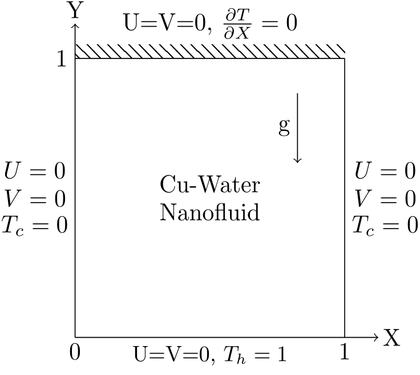
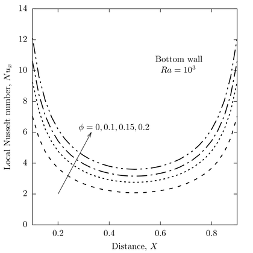
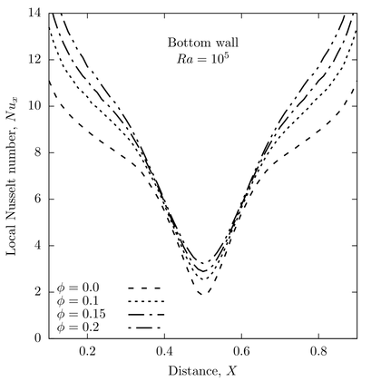
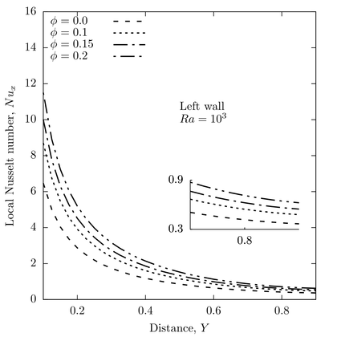
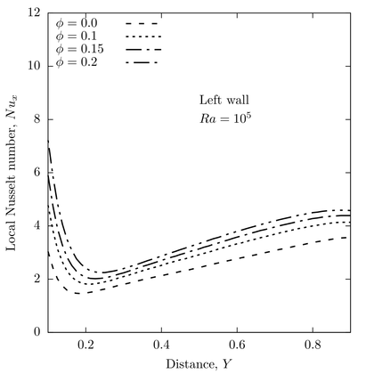

%ADI method with the application of TDMA is used to solve a natural %convection in a square lid(1x1) with Neumann B.C at top lid (0<x<1,y=1; dT/dy=0) %To regenerate the result from basakandchamkha_2012.pdf where they used FVM %for solving the problem %Dirichlet B.C at the bottom, left and right lid (y=0, 0<x<1, T=1; x=0, 0<y<1, T=0 and x=1, 0<y<1, T=0) %Please check the pdf named ADI_Nat_nan.pdf for the governing equations and %the numerical procedure applied %Author Md Rysul Kabir %Date 5/17/18

function ADI_Nat_nan mx=80; my=80; nx=mx+1; ny=my+1; lx=1; ly=1; x=linspace(0,lx,nx); y=linspace(0,ly,ny); %Nanofluid part cpf=4179; cps=385; kf=0.613; ks=401; rhof=997.1; rhos=8933; bf=21e-5; bs=1.67e-5; muf=9.09e-4; phi=0.0; rhonf=(1-phi)*rhof+phi*rhos; rcpnf=(1-phi)*rhof*cpf+phi*rhos*cps; rbnf=(1-phi)*rhof*bf+phi*rhos*bs; munf=muf/((1-phi)^2.5); A=ks+2*kf; B=phi*(kf-ks); knf=kf*((A-2*B)/(A+B)); af=kf/(rhof*cpf); anf=knf/rcpnf; nuf=muf/rhof; Pr=nuf/af; Ra=1e+5; dx=lx/mx; dy=ly/my; dxx=dx*dx; dyy=dy*dy; dxxV=munf/(rhonf*af*dxx); dyyV=munf/(rhonf*af*dyy); dxxT=anf/(af*dxx); dyyT=anf/(af*dyy); beta2=dxx/dyy; S(1:nx,1:ny)=1; W=zeros(nx,ny); T=zeros(nx,ny); T(:,1)=1; S(1,1:ny)=0; S(nx,1:ny)=0; S(1:nx,1)=0; S(1:nx,ny)=0; errtol=1e-6; errpsi=2*errtol; errome=2*errtol; errtem=2*errtol; iter=0; itermax=40000; Siter=S; Snew_iter=S; Witer=W; Wnew_iter=W; Titer=T; Tnew_iter=T; while((errpsi>errtol||errome>errtol||errtem>errtol)&&iter<itermax) %Solving for the streamline %Horizontal sweep a(1:nx)=1; b(1:nx)=-2*(1+beta2); c(1:nx)=1; d(1:nx)=0; for j=2:ny-1 for i=2:nx-1 d(i)=-(beta2*(Siter(i,j-1)+Siter(i,j+1))+dxx*Witer(i,j)); end a(1)=0; b(1)=1; c(1)=0; %Dirichlet B.C a(nx)=0; b(nx)=1; c(nx)=0; %Dirichlet B.C d(1)=S(1,j); d(nx)=S(nx,j); Snew_iter(1:nx,j)=solver_tdma(nx,a,b,c,d); end Siter=Snew_iter; %Vertical sweep for i=2:nx-1 a(1:ny)=beta2; b(1:ny)=-2*(1+beta2); c(1:ny)=beta2; d(1:ny)=0; for j=2:ny-1 d(j)=-(Siter(i-1,j)+Siter(i+1,j)+dxx*Witer(i,j)); end a(1)=0; b(1)=1; c(1)=0; %Dirichlet B.C a(ny)=0; b(ny)=1; c(ny)=0; %Dirichlet B.C d(1)=S(i,1); d(ny)=S(i,ny); Snew_iter(i,1:ny)=solver_tdma(ny,a,b,c,d); end errpsi=sum(sum(abs(Snew_iter-Siter)))/sum(sum(abs(Snew_iter))); Siter=Snew_iter; %Velocity components calculation for internal nodes u=zeros(nx,ny); v=zeros(nx,ny); u(2:nx-1,2:ny-1)=(Snew_iter(2:nx-1,3:ny)-Snew_iter(2:nx-1,1:ny-2))/(2*dy); v(2:nx-1,2:ny-1)=-(Snew_iter(3:nx,2:ny-1)-Snew_iter(1:nx-2,2:ny-1))/(2*dx); %Solving for the vorticity %Declaring B.Cs for vorticity W(1:nx,1)=2*(Snew_iter(1:nx,1)-Snew_iter(1:nx,2))/dyy; %Bottom W(1:nx,ny)=2*(Snew_iter(1:nx,ny)-Snew_iter(1:nx,ny-1))/dyy; %Top W(1,1:ny)=2*(Snew_iter(1,1:ny)-Snew_iter(2,1:ny))/dxx; %Left W(nx,1:ny)=2*(Snew_iter(nx,1:ny)-Snew_iter(nx-1,1:ny))/dxx; %Right %Horizontal sweep a(1:nx)=0; b(1:nx)=0; c(1:nx)=0; d(1:nx)=0; for j=2:ny-1 for i=2:nx-1 %Upwind if(u(i,j)>0), sigu=1; else if(u(i,j)<0), sigu=-1; else sigu=0; end; end; if(v(i,j)>0), sigv=1; else if(v(i,j)<0), sigv=-1; else sigv=0; end; end; %Coeffiticents for vorticity equation ap=2*dxxV+2*dyyV+sigu*u(i,j)/dx+sigv*v(i,j)/dy; ae=0.5*(1-sigu)*u(i+1,j)/dx-dxxV; aw=-0.5*(1+sigu)*u(i-1,j)/dx-dxxV; an=0.5*(1-sigv)*v(i,j+1)/dy-dxxV; as=-0.5*(1+sigv)*v(i,j-1)/dy-dxxV; a(i)=aw; b(i)=ap; c(i)=ae; d(i)=-(as*Witer(i,j-1)+an*Witer(i,j+1))+0.5*Ra*Pr*rbnf*(Titer(i+1,j)-Titer(i-1,j))/(dx*bf*rhonf); end a(1)=0; b(1)=1; c(1)=0; %Dirichlet B.C a(nx)=0; b(nx)=1; c(nx)=0; %Dirichlet B.C d(1)=W(1,j); d(nx)=W(nx,j); Wnew_iter(1:nx,j)=solver_tdma(nx,a,b,c,d); end Witer=Wnew_iter; %Vertical sweep for i=2:nx-1 for j=2:ny-1 %Upwind if(u(i,j)>0), sigu=1; else if(u(i,j)<0), sigu=-1; else sigu=0; end; end; if(v(i,j)>0), sigv=1; else if(v(i,j)<0), sigv=-1; else sigv=0; end; end; %Coeffiticents for vorticity equation ap=2*dxxV+2*dyyV+sigu*u(i,j)/dx+sigv*v(i,j)/dy; ae=0.5*(1-sigu)*u(i+1,j)/dx-dxxV; aw=-0.5*(1+sigu)*u(i-1,j)/dx-dxxV; an=0.5*(1-sigv)*v(i,j+1)/dy-dxxV; as=-0.5*(1+sigv)*v(i,j-1)/dy-dxxV; a(j)=as; b(j)=ap; c(j)=an; d(j)=0; d(j)=-(aw*Witer(i-1,j)+ae*Witer(i+1,j))+0.5*Ra*Pr*rbnf*(Titer(i+1,j)-Titer(i-1,j))/(dx*bf*rhonf); end a(1)=0; b(1)=1; c(1)=0; %Dirichlet B.C a(ny)=0; b(ny)=1; c(ny)=0; %Dirichlet B.C d(1)=W(i,1); d(ny)=W(i,ny); Wnew_iter(i,1:ny)=solver_tdma(ny,a,b,c,d); end errome=sum(sum(abs(Wnew_iter-Witer)))/sum(sum(abs(Wnew_iter))); Witer=Wnew_iter; %Solving energy equation %Horizontal sweep for j=2:ny-1 for i=2:nx-1 %Upwind if(u(i,j)>0), sigu=1; else if(u(i,j)<0), sigu=-1; else sigu=0; end; end; if(v(i,j)>0), sigv=1; else if(v(i,j)<0), sigv=-1; else sigv=0; end; end; %Coeffiticents for energy equation ap=2*dxxT+2*dyyT+sigu*u(i,j)/dx+sigv*v(i,j)/dy; ae=0.5*(1-sigu)*u(i+1,j)/dx-dxxT; aw=-0.5*(1+sigu)*u(i-1,j)/dx-dxxT; an=0.5*(1-sigv)*v(i,j+1)/dy-dxxT; as=-0.5*(1+sigv)*v(i,j-1)/dy-dxxT; a(i)=aw; b(i)=ap; c(i)=ae; d(i)=0; d(i)=-(as*Titer(i,j-1)+an*Titer(i,j+1)); end a(1)=0; b(1)=1; c(1)=0; %Dirichlet B.C a(nx)=0; b(nx)=1; c(nx)=0; %Dirichlet B.C d(1)=T(1,j); d(nx)=T(nx,j); Tnew_iter(1:nx,j)=solver_tdma(nx,a,b,c,d); end Titer=Tnew_iter; %Vertical sweep for i=2:nx-1 for j=2:ny-1 %Upwind if(u(i,j)>0), sigu=1; else if(u(i,j)<0), sigu=-1; else sigu=0; end; end; if(v(i,j)>0), sigv=1; else if(v(i,j)<0), sigv=-1; else sigv=0; end; end; %Coeffiticents for energy equation ap=2*dxxT+2*dyyT+sigu*u(i,j)/dx+sigv*v(i,j)/dy; ae=0.5*(1-sigu)*u(i+1,j)/dx-dxxT; aw=-0.5*(1+sigu)*u(i-1,j)/dx-dxxT; an=0.5*(1-sigv)*v(i,j+1)/dy-dxxT; as=-0.5*(1+sigv)*v(i,j-1)/dy-dxxT; a(j)=as; b(j)=ap; c(j)=an; d(j)=0; d(j)=-(aw*Titer(i-1,j)+ae*Titer(i+1,j)); end a(1)=0; b(1)=1; c(1)=0; %Dirichlet B.C a(ny)=-1; b(ny)=1; c(ny)=0; %Neumann B.C d(1)=T(i,1); d(ny)=0; Tnew_iter(i,1:ny)=solver_tdma(ny,a,b,c,d); end errtem=sum(sum(abs(Tnew_iter-Titer)))/sum(sum(abs(Tnew_iter))); Titer=Tnew_iter; iter=iter+1; end maxpsi=max(max(abs(Siter))); disp(maxpsi); aL=NuVL(dx,Titer); aB=NuB(dy,Titer); Nu=(knf/kf)*aL; Nu1=-(knf/kf)*aB; i=0.1/dx+1; j=0.9/dx+1; result=[y(i:j)' Nu(i:j)']; result1=[x(i:j)' Nu1(i:j)']; dlmwrite('NuL_Ra_100k_f.txt',result,'delimiter','\t','precision',3,'newline','pc'); dlmwrite('NuB_Ra_100k_f.txt',result1,'delimiter','\t','precision',3,'newline','pc'); figure(1); plot(x(i:j),Nu(i:j)); a=Titer'; figure(2); contourf(x,y,a,9,'k-');colormap; % clabel(C,H,'LabelSpacing',500); title(sprintf('Iteration %d and Rayleigh Number %0.2g, errpsi %0.2g, errome %0.2g, errtem %0.2g',iter, Ra, errpsi, errome, errtem)); end



